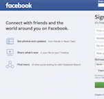
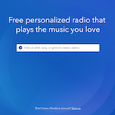

I am a huge fan of This American Life. I love to listen to their podcasts while I'm doing homework, cooking, or riding on the bus or train. I just go to their archive page and listen to different broadcasts from 1995 to 2016.
I love to listen to Pandora while I'm doing homework (If I get tired of This American Life).
Facebook is a website I frequently visit but feel a bit strange about. It always creeped me out a bit.
Moodle is another site I visit frequently. This is where I post many assignments for my liberal arts classes.
Images of websites


Why I am taking this class and what I hope to achieve through it?
I don't know very much about web design, but I think it's an extremely useful (and marketable) skill to have as a Graphic Designer. I hope to become skilled in web design and learn to use html and css
List of Case Studies for Screen Reader
- Who is performing?
- Where can I buy tickets?
- When is the show?
- Where is the show?
I attempted to find where I could find tickets using Screen Reader. This is a very important piece of information, but I had put it after the Artist Biographies. (which is extremely long) It makes more sense to put the link to purchase tickets before the biographies so that the user does not have to listen to 15 minutes of biographies to find the link.
After updating my site it is much easier (and faster) to find the link to purchase tickets. It only takes a few presses of the down arrow and then I'm there.
Links to projects
Event Website
Visual Artist Portfolio
Client Proccess Site